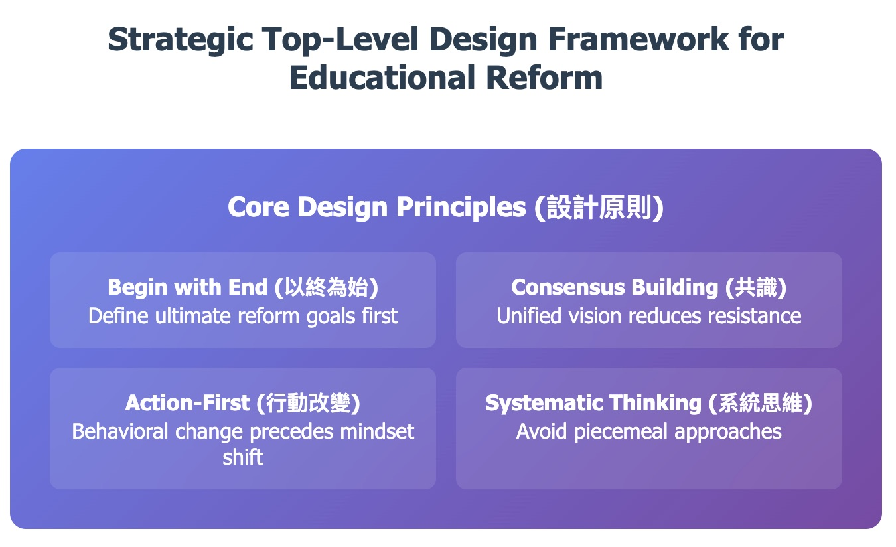

3 Strategic Top-Level Design
3.1 Introduction
Strategic top-level design represents the architectural foundation upon which successful educational transformation rests. Unlike piecemeal reforms that address symptoms rather than systemic issues, strategic design begins with a clear vision of desired outcomes and works backwards through methodical planning to create coherent, sustainable change pathways. This approach, fundamental to the inquiry-based learning revolution, demands that educational leaders think like systems architects rather than incremental managers.
The Chinese educational reform documents emphasize a critical principle: “改思维，以终为始” (gǎi sīwéi, yǐ zhōng wéi shǐ) — transform thinking by beginning with the end in mind. This concept, borrowed from Stephen Covey’s influential work but deeply rooted in traditional Chinese strategic thought, forms the cornerstone of effective educational design. Rather than asking “what can we change?” strategic designers ask “what must our graduates become?” and design backwards from that vision.
Strategic top-level design differs fundamentally from traditional reform approaches in its scope, coherence, and temporal perspective. Where conventional reforms often address isolated problems with isolated solutions, strategic design creates integrated systems where each component reinforces others. This integration proves particularly crucial in inquiry-based learning implementations, where classroom practices, assessment systems, teacher development, and institutional culture must align to support student questioning and exploration.
3.2 The Architecture of Educational Vision
Effective strategic design begins with what we might call “vision architecture” — the systematic construction of clear, measurable, and inspiring educational outcomes. This process requires educational leaders to move beyond vague aspirations like “improving student learning” toward specific competencies, mindsets, and capabilities that define successful graduates.
Vision architecture in inquiry-based systems centers on developing students who can formulate meaningful questions, pursue evidence-based investigations, and construct knowledge through exploration rather than passive reception. This vision must be articulated with sufficient specificity that teachers, administrators, parents, and students themselves can recognize progress toward its achievement.
The Chinese reform experiences demonstrate that effective vision architecture operates at multiple levels simultaneously. At the broadest level, leaders must articulate how inquiry-based learning serves societal needs for creative, critical thinkers capable of addressing complex challenges. At the institutional level, they must specify how inquiry approaches will transform school culture, classroom dynamics, and student-teacher relationships. At the individual level, they must describe the specific skills, attitudes, and knowledge that inquiry-based graduates will possess.
Consider the example of Xiaxia No. 1 High School, which developed its “Three Questions, Three Explorations” model through careful vision architecture. School leaders began by envisioning graduates who could independently identify important questions, systematically investigate complex problems, and communicate findings effectively. Working backwards from this vision, they designed classroom protocols, teacher development programs, and assessment systems that incrementally built these capabilities throughout students’ educational journey.
This backwards design process reveals a fundamental principle of strategic architecture: coherence emerges from alignment rather than accumulation. Rather than adding inquiry-based practices to existing traditional structures, effective design rebuilds educational systems around inquiry principles. This rebuilding requires leaders to examine every aspect of schooling — from curriculum sequencing to physical space design — through the lens of their ultimate vision.

3.3 Systems Thinking in Educational Design
Strategic top-level design demands sophisticated systems thinking that recognizes the complex interdependencies within educational environments. Unlike mechanical systems where components function independently, educational systems exhibit what complexity theorists call “emergent properties” — outcomes that arise from the interaction of multiple elements rather than from any single intervention.
Systems thinking in educational design requires leaders to map the relationships between seemingly separate elements. Teacher beliefs about learning influence classroom practices, which shape student expectations, which affect learning outcomes, which inform parent perceptions, which influence policy decisions, which determine resource allocation, which affects teacher working conditions, completing the cycle. Effective strategic design identifies these feedback loops and designs interventions that create positive rather than negative reinforcement patterns.
The inquiry-based learning transformation exemplifies systems thinking in practice. Successful implementation requires alignment across multiple system levels: individual teacher beliefs and practices, departmental collaboration patterns, administrative support structures, assessment and evaluation systems, parent and community expectations, and broader policy frameworks. Misalignment at any level can undermine the entire transformation effort.
Regional experiences from Jilin Province illustrate this systems approach. Rather than simply training teachers in inquiry methods, educational leaders simultaneously redesigned evaluation systems to reward student questioning rather than just correct answers, restructured professional development to emphasize collaborative investigation rather than individual skill acquisition, and engaged parents in understanding how inquiry learning would benefit their children’s long-term development. This multi-level coordination created reinforcing pressures that supported rather than undermined the desired transformation.
Systems thinking also reveals the importance of what change theorists call “leverage points” — places within complex systems where small shifts can produce significant changes. In educational transformation, these leverage points often exist at the intersection of formal and informal structures. For example, changing how teachers collaborate informally can have greater impact than modifying official curriculum documents, because informal collaboration patterns influence how teachers interpret and implement formal requirements.
3.4 The Backwards Design Methodology
Backwards design methodology provides the operational framework for translating strategic vision into practical implementation plans. This approach, pioneered in curriculum development by Grant Wiggins and Jay McTighe, proves particularly powerful in comprehensive educational transformation because it maintains focus on ultimate outcomes while allowing flexibility in implementation pathways.
The methodology operates through three sequential stages, each building upon the previous one. First, leaders identify desired results with specific, measurable outcomes that define successful transformation. Second, they determine acceptable evidence that would demonstrate achievement of those outcomes. Third, they design learning experiences and instruction that will produce the acceptable evidence and achieve the desired results.
Applied to inquiry-based learning transformation, backwards design begins with precise specification of inquiry capabilities that graduates should demonstrate. These might include the ability to generate researchable questions from complex scenarios, design and conduct systematic investigations using appropriate methodologies, analyze evidence critically to draw warranted conclusions, and communicate findings effectively to diverse audiences. Each capability must be defined with sufficient clarity that progress can be measured and supported.
The evidence determination stage requires leaders to specify how they will recognize successful development of inquiry capabilities. This stage proves particularly challenging in inquiry-based systems because traditional assessment methods often conflict with inquiry principles. If leaders want students to develop questioning abilities, they must create assessment systems that reward good questions rather than just correct answers. If they want students to pursue independent investigations, they must develop evaluation methods that assess investigative processes rather than just final products.
Dongfeng County’s experience illustrates effective backwards design implementation. County leaders began by specifying that successful students would demonstrate curiosity-driven questioning, evidence-based reasoning, and collaborative problem-solving. They then identified evidence including student-generated research questions, investigation portfolios, peer evaluation of collaborative work, and parent reports of increased questioning at home. Finally, they designed professional development, curriculum modifications, and classroom practice changes that would produce this evidence.
The learning experience design stage requires careful attention to the developmental sequence through which inquiry capabilities emerge. Unlike content knowledge that can be transmitted directly, inquiry capabilities develop through guided practice with gradually increasing independence. This development requires teachers to shift from information delivery toward what the Chinese reform documents call “导练” (dǎo liàn) — guided practice that scaffolds student exploration while maintaining clear learning objectives.
3.5 Implementation Frameworks
Strategic implementation requires frameworks that maintain coherence while allowing adaptation to local contexts. The most effective frameworks provide sufficient structure to ensure consistency while preserving flexibility needed for contextual responsiveness. This balance proves particularly important in inquiry-based learning implementation because questioning and exploration must be authentic to students’ lived experiences while building toward systematic investigation capabilities.
Successful implementation frameworks typically include four essential components: phase sequencing, stakeholder engagement protocols, monitoring and adjustment mechanisms, and sustainability planning. Each component must be designed to support inquiry-based learning principles while addressing practical implementation challenges.
Phase sequencing involves careful planning of transformation stages that build capability incrementally while maintaining institutional stability. The Chinese reform experiences suggest that effective sequencing begins with pilot implementations in supportive environments, expands to broader implementation as capabilities develop, and finally integrates inquiry approaches throughout entire systems. This sequencing allows for learning and adjustment while building confidence and competence among stakeholders.
The pilot phase serves multiple purposes beyond simply testing new approaches. Pilots create local expertise that can support broader implementation, generate concrete examples that help other educators understand inquiry-based practices, and provide evidence of effectiveness that builds stakeholder confidence. However, pilots must be designed as learning laboratories rather than demonstration projects, with explicit mechanisms for capturing lessons and adapting approaches based on experience.
Stakeholder engagement protocols ensure that all affected parties understand their roles in supporting inquiry-based learning transformation. These protocols must address parents who may worry that questioning-focused education will undermine academic achievement, teachers who may feel unprepared to facilitate rather than direct student learning, and administrators who may need to restructure evaluation and support systems. Effective engagement moves beyond simple communication toward active involvement in transformation planning and implementation.
Monitoring and adjustment mechanisms provide the feedback systems necessary for adaptive implementation. Traditional project management approaches often prove inadequate for educational transformation because learning systems exhibit nonlinear responses to interventions. Small changes can sometimes produce dramatic results, while major interventions may have minimal impact. Effective monitoring systems track both intended and unintended consequences while providing mechanisms for rapid adjustment when implementation deviates from desired directions.
3.6 Avoiding Design Pitfalls
Strategic design efforts face several common pitfalls that can undermine even well-intentioned transformation efforts. Recognizing and avoiding these pitfalls proves essential for successful inquiry-based learning implementation. The Chinese reform documents specifically warn against “形式主义” (xíngshì zhǔyì) — formalism that focuses on surface appearances rather than substantive change — and “拿来主义” (ná lái zhǔyì) — borrowing approaches without adaptation to local contexts.
Formalism represents perhaps the most insidious design pitfall because it creates the appearance of transformation without achieving substantive change. In inquiry-based learning contexts, formalism might involve teachers asking more questions during lessons without actually shifting toward student-generated inquiry, or schools adopting inquiry terminology while maintaining traditional evaluation systems that reward compliance rather than questioning. Avoiding formalism requires leaders to focus on outcomes rather than activities, measuring actual changes in student questioning and investigation capabilities rather than simply counting inquiry-based lesson plans.
The borrowing pitfall occurs when leaders attempt to import successful practices from other contexts without adequate attention to local conditions. While learning from successful examples proves valuable, direct replication rarely succeeds because educational practices emerge from complex interactions between formal structures, informal culture, resource availability, and stakeholder expectations. Effective strategic design adapts promising practices to local contexts rather than importing them wholesale.
A third major pitfall involves what we might call “implementation compression” — attempting to accelerate transformation beyond the natural pace of capability development. Educational transformation requires time for stakeholders to develop new knowledge, skills, and attitudes. Rushing implementation often produces surface compliance without deep understanding, creating fragile changes that disappear when external pressure diminishes. Strategic design must account for the time required for authentic transformation while maintaining momentum and stakeholder engagement.
Scope creep represents another common pitfall where strategic design efforts expand beyond manageable boundaries. While comprehensive transformation requires attention to multiple system elements, attempting to change everything simultaneously can overwhelm stakeholders and fragment leadership attention. Effective strategic design prioritizes high-leverage interventions while sequencing additional changes to build on initial successes.
3.7 Integration with Organizational Culture
Strategic top-level design must account for the deep cultural patterns that shape how educational organizations function. Culture influences everything from how teachers collaborate to how students perceive their roles as learners. Inquiry-based learning transformation requires cultural shifts that support questioning, exploration, and intellectual risk-taking — qualities that may conflict with traditional educational cultures emphasizing compliance, standardization, and certainty.
Cultural integration begins with understanding existing cultural patterns and their relationship to inquiry-based learning goals. Traditional educational cultures often reward students for producing correct answers quickly rather than asking thoughtful questions, teachers for maintaining classroom control rather than facilitating student exploration, and administrators for achieving predictable outcomes rather than supporting innovative practices. These cultural patterns create what organizational theorists call “institutional friction” that can undermine even well-designed transformation efforts.
Effective cultural integration requires what Edgar Schein calls “cultural learning” — processes through which organizations develop new shared assumptions about effective practice. This learning cannot be mandated through policy changes but must emerge through sustained experience with new approaches that demonstrate superior outcomes. Strategic design must create opportunities for stakeholders to experience the benefits of inquiry-based learning directly rather than simply hearing about them abstractly.
The Chinese reform experiences demonstrate several effective cultural integration strategies. School leaders created “learning communities” where teachers collaborated in developing and refining inquiry-based practices, providing social support for cultural change. They celebrated examples of effective student questioning and investigation, gradually shifting recognition systems toward inquiry-based achievements. They engaged parents in understanding how inquiry learning would benefit their children, building community support for cultural transformation.
Cultural integration also requires attention to what anthropologists call “cultural artifacts” — the visible symbols, stories, and practices that embody organizational values. In inquiry-based learning transformation, these artifacts might include classroom arrangements that support collaborative investigation, display systems that showcase student questions alongside their answers, and evaluation forms that assess questioning capabilities alongside content knowledge.
3.8 Conclusion
Strategic top-level design provides the foundation upon which successful educational transformation builds. By beginning with clear vision, thinking systemically about complex interdependencies, employing backwards design methodology, implementing through structured frameworks, avoiding common pitfalls, and integrating with organizational culture, educational leaders can create coherent transformation processes that achieve sustainable change.
The inquiry-based learning transformation demands particularly sophisticated strategic design because it requires alignment across multiple system levels while supporting the development of complex capabilities that emerge through guided practice rather than direct instruction. Success requires leaders who can think architecturally about educational systems while remaining responsive to local contexts and stakeholder needs.
As we will explore in subsequent chapters, strategic design provides the framework within which specific implementation strategies, leadership approaches, and teacher development programs can be organized and coordinated. Without this strategic foundation, even excellent specific practices may fail to achieve their potential impact because they lack the systemic support necessary for sustainable transformation.
The Chinese reform experiences demonstrate that strategic top-level design, when implemented thoughtfully and persistently, can create educational environments where students develop as confident, capable inquirers prepared to address the complex challenges of an uncertain future. This achievement requires leaders who understand that transformation is not about changing what schools do, but about changing what schools are — their fundamental identity, purpose, and way of being in the world.